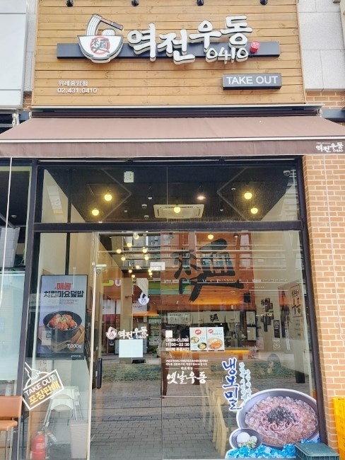
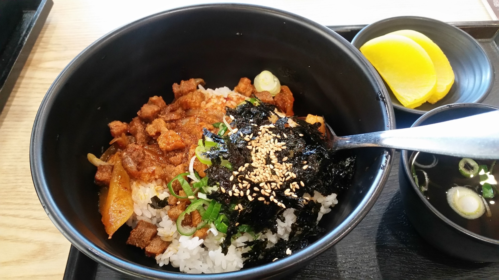
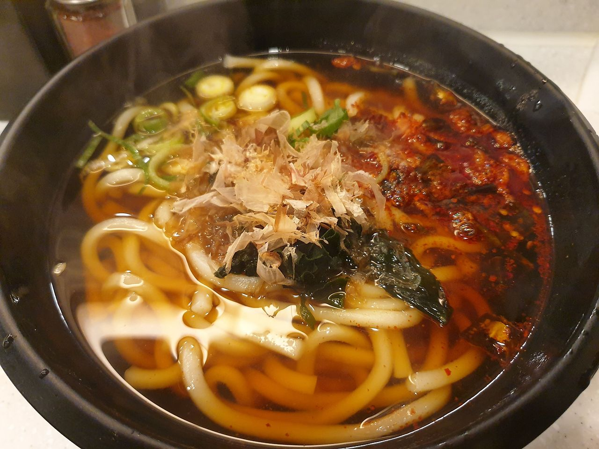
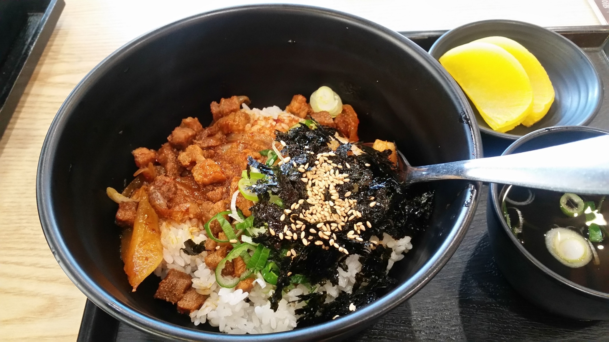
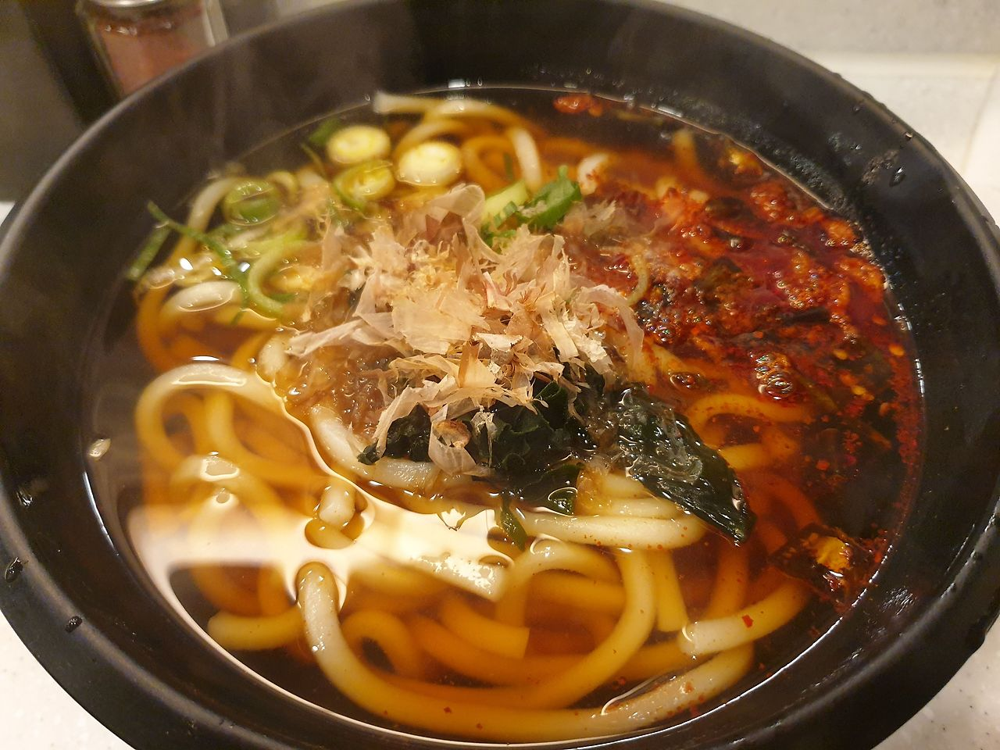
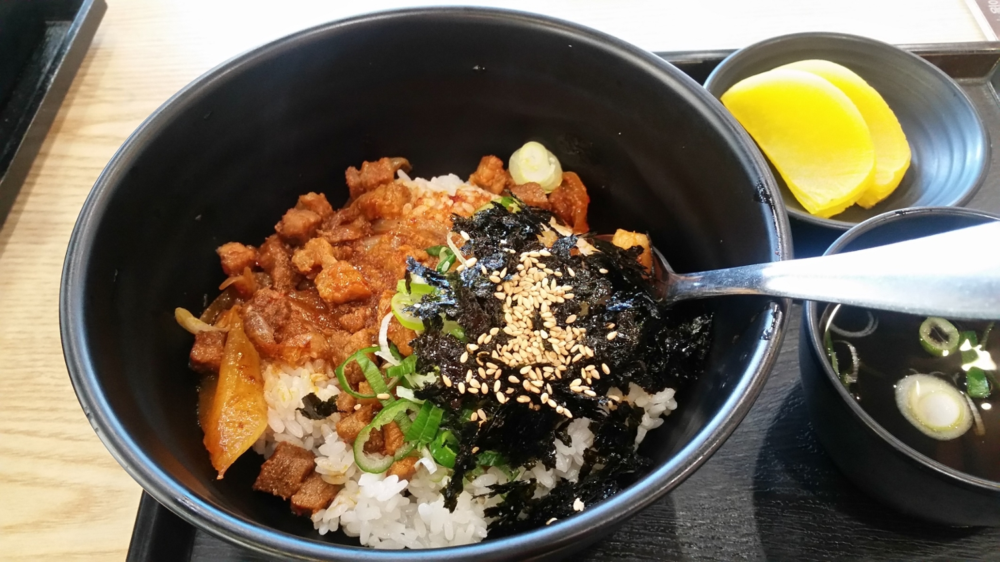
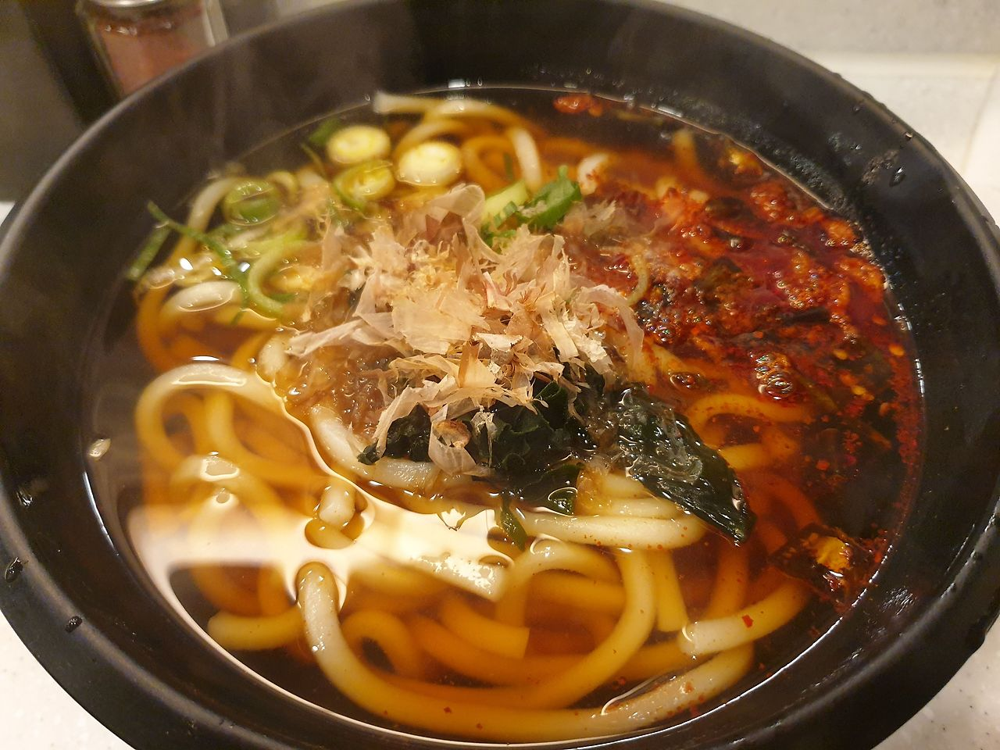

home
역전 우동

서울 광진구 군자로 76 1층 역전우동
인기 메뉴
매콤치킨마요덮밥: 7,000원
매콤제육덮밥: 7,000원
얼큰우동: 6000원 (겨울 한정)
 
우동은 거들 뿐..
가게 이름부터 우동이 메인인 가게이지만 다양한 덮밥과 돈까스를 팔고 있어서 든든히 식사하기 좋습니다.
어린이대공원 역으로부터 10분거리에 있어서 조용히 식사할 수 있다는 장점과
가격이 합리적이고 맛있는 덮밥류를 우동국물과 함께 먹을 수 있는 장점이 있어요!
정보 더보기
 


